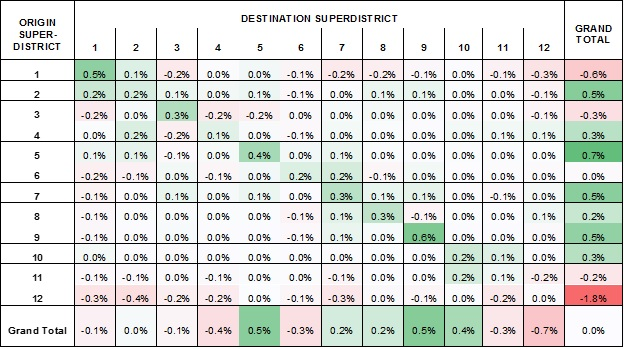

Data Driven Methods
This page is part of the Category [.
There are generally two methods for using travel demand models together with passive origin-destination (OD) data or incorporating this data in travel demand models. The first approach uses travel demand models (usually of more traditional, aggregate designs) to pivot off of OD matrices developed from passive data and traffic counts. The second approach instead uses these OD matrices to develop fixed factors or constants which are incorporated into the travel model; this approach is more attractive for activity-based demand simulation models although it can also be applied with aggregate trip-based travel models. The following sections describe and discuss these two similar and related but alternative approaches.
# Pivot-Point Methods
The most common approach to using travel demand models together with an independently data-derived trip matrix is to apply the change in OD travel patterns predicted by a model to the data-driven OD matrix.[1] [2]
This approach typically uses rules or a weighting scheme to combine additive pivoting and multiplicative pivoting. Additive pivoting works by subtracting the modeled OD matrix for the base case from the modeled OD matrix for the alternative and adding this difference to the data-derived OD matrix. Multiplicative pivoting works by dividing the modeled OD matrix for the alternative by the modeled OD matrix for the base case and multiplying the data-derived OD matrix by this growth factor. Multiplicative pivoting is generally preferred for normal, moderate growth or changes, but can produce poor forecasts in some cases, particularly when there are very few or no trips for an OD pair in one or more of the matrices. Rules or weighting based on the absolute number of trips are therefore commonly used to select or combine the two basic pivoting methods.
Pivot-point methods have the clear advantage of requiring relatively little or no modification to an existing travel demand model and hence relatively little effort to apply. However, when incorporated in a model rather than used for an individual forecast, they can require careful management and updating of an input file for the base-case modeled OD matrix. This has little impact on the application of the model for routine forecasting, but it can complicate updates to the model, including zone splits.
Pivot-point methods also are attractive because they are straightforward and easy to understand in concept and explain. Many professionals are already familiar with pivot-point methods from their use to pivot off individual traffic counts to produce facility-specific forecasts. Pivoting on ODs rather than highway network link volumes is less familiar to many in the United States, but it has long been common in Europe and Australia and is quickly growing in use in the United States in response to the advent of big OD data. Pivot-point modeling can substantially improve forecasts by removing the error in a travel demand model’s base-case OD matrix. This error is known to be the largest source of error in traffic modeling;[3] thus, pivot-point methods promise substantially improved accuracy in forecasting. However, pivot-point methods have no effect on the sensitivity of the travel model or resulting forecast to changes in travel time, tolls, land use, or other factors.
This can be viewed in either a positive or negative light. On the one hand, the independence of the model’s sensitivity to the approach can alleviate any concerns related to overfitting or over-specification. On the other hand, this same independence of the model’s sensitivity to the approach also means that the information in the big OD data does not necessarily improve the sensitivity of the travel model or resulting forecast to changes in travel time, tolls, land use, or other factors. The large amount of error in base-case models suggests the strong possibility of under-specification errors in existing or traditional models which may translate into over-sensitivity of models to travel times, tolls, land-use variables, and other factors, and pivot-point methods do not help to address this issue.
While the inability of pivot-point methods to address under-specification errors affecting model sensitivities is an important theoretical concern, one of the main drawbacks of pivot-point approaches in practice is the inability of applying the approach at the level of disaggregate demand in demand simulation models such as activity-based models or supply chain simulation models. The fixed-factor approach presented in the following section offers an alternative method that can be applied to disaggregate demand simulation models as well as traditional aggregate models. In summary, pivot-point approaches may not be theoretically ideal or practical for use with activity-based or supply chain simulation models, but they are easy to apply with many travel models and can substantially reduce error.
# Fixed-Factor/Constant Rich Methods
Fixed-factor or constant rich approaches involve a deeper integration of big OD data into a travel model. As such, they generally require more effort, but they can also potentially yield greater benefits than pivot-point methods and are applicable to activity-based or supply chain simulation models as well as more traditional aggregate trip-based models.
The fixed-factor approach works by incorporating a set of constants into the spatial (gravity, destination, or activity location choice) model components of a travel demand modeling system. These factors are estimated in a statistically rigorous way to allow the model to reproduce expanded big OD data with minimal error. Fixed factors or constants can be specific to individual or groups of origins or destinations or OD pairings. These constants are importantly different than traditional k factors sometimes used in gravity models in that they can be systematically statistically estimated from a sound support of big OD data; whereas, k factors were developed in an ad hoc fashion based on survey or traffic count data that often could not actually support them. Despite this important distinction, some historical abuses of k factors still make some professionals hesitant or fearful of constant rich approaches. Individuals with a classical statistical background may also have a hesitancy due to fears of over-specification errors. However, while errors and abuse are possible in any statistical modeling, and some level of caution is always an important component in good judgment, in the new context of the availability of Big Data, conscientious professionals should reconsider constant rich approaches in an open and unbiased way. The emergence of a new generation of constant rich approaches is driven by a real change in the context of the data and analysis methods available, the evaluation of which is should not be overly burdened by data-poor and poorly structured use of k factors that bear little resemblance to contemporary methods. In addition to Big Data, machine learning analysis methods are another new factor driving contemporary constant rich approaches that are also worthy of further consideration. Machine learning also provides a perspective that is more concerned with under-specification errors than over-specification errors, which may be helpful in balancing certain schools of classical statistical thought.
Fixed-factor methods can be developed in two importantly different ways. First, a sequential estimation approach in which the factors are estimated after and independently of other model parameters is like pivot-point methods in that it does not affect model sensitivities for good or ill, and it is easier to apply. Second, simultaneous estimation of fixed factors together with other model parameters requires more effort, but it also offers the potential for better results by addressing likely under-specification errors and potential model over-sensitivities. Over-specification errors are still possible, though this is less of an issue with Big Data.
A constant rich, fixed-factor approach was used to incorporate passive OD data in the activity location choice model components of a DaySim activity-based modeling system for the Chattanooga, Tennessee, MPO.[4] In this application, believed to be the first in which big OD data has been incorporated in an activity-based model, the simpler, sequential estimation approach was used and the fixed factors were estimated using shadow-pricing techniques to minimize square error versus the OD data. The term shadow price is taken from economics where it is used for the Lagrange multiplier corresponding to the constraint on a demand function that the market reaches equilibrium. It is an unobserved “price,” or factor, in the demand function that can be inferred from the observed point at which equilibrium is reached in a market. This corresponds well with this usage in travel modeling. In this context, the shadow price is an additional term in the utility function of the demand models that can be inferred from the actual observed travel patterns (in this case, from the passive OD data).
The Chattanooga model’s zones were grouped into 40 districts (in part due to limited confidence in the spatial precision of the data being used) and 1,600 constants were estimated for each district OD pairing. The shadow-pricing estimation was judged to have converged after 24 iterations. The sum of absolute errors versus the OD data decreased from 516,595 to 59,962 when comparing the original comparison of the model without constants to big OD data to the final model with the fixed factors from shadow pricing. The weighted mean absolute percent error decreased from 22.2% to 8.3%, and the RMSE decreased from 37.1% to 10.5%. A summary comparison of the actual patterns at the level of 12 further aggregated superdistricts is presented in the table below as a complement to these statistics.

''Comparison Between Passive Cell Phone Based ODs and Destination Choice Models with Fixed Factors in Chattanooga
The table shows that a constant rich fixed-factor or shadow-pricing approach can allow travel demand models to reproduce travel patterns from big OD data with good accuracy. The table shows that relative percentage errors for all OD pairs are between -0.4% and +0.6% and total trips from/to superdistricts are between -1.8% and +0.7% indicating very good agreement between the model and the data. The modeled OD matrices using these factors also produced improved agreement of the modeled traffic volumes with traffic counts on the highway network. It also contributed to good assignment validation statistics allowing the model to achieve a RMSE of modeled traffic volumes versus counts of 28.97% and a correlation coefficient of 0.971. Although some traffic counts were used to correct the expansion of the cell phone data using the iterative screenline fitting approach discussed in Section 4.2.4, the final agreement between the modeled roadway volumes and all traffic counts provides some degree of further independent validation of these methods and their ability to reproduce travel patterns.
# References
Source Content: How-To: Develop Big Data Driven Demand for Traffic Forecasting, FHWA: Travel Model Improvement Program (TMIP), Forthcoming, 2017. Content Charrette: Destination Choice Models
24. Daly, A., J. Fox and J. Tuinenga. Pivot-Point Procedures in Practical Travel Demand Modeling. Presented at the 45th Congress of the European Regional Science Association, Amsterdam, The Netherlands, August 2005. ↩︎
24. 25. Fox, J., A. Daly and B. Patruni. Enhancement of the Pivot Point Process used in the Sydney Strategic Model. Bureau of Transport Statistics, Transport for New South Wales, 2012. ↩︎
Zhao, Y. and K. Kockelman (2002) 'The Propagation of Uncertainty through Travel Demand Models', Annals of Regional Science 36 (1), pp.145-163 ↩︎
13. Lee, Y., V. Bernardin and D. Kall, Big Data and Advanced Models on a Mid-Sized City’s Budget: The Chattanooga Experience. Presented at the 15th National Tools of the Trade Conference, Charleston, SC, September, 2016. ↩︎